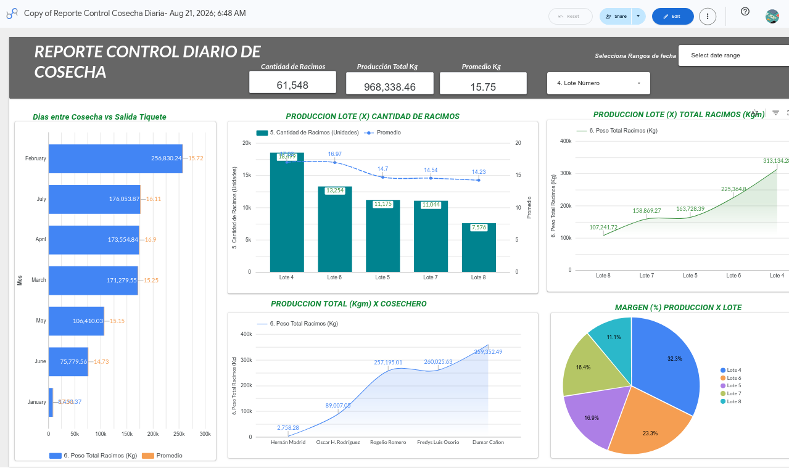

Juan Carlos Carvajal G.
Oficial de Cumplimiento | Profesional en Finanzas y Negocios Internacionales
Adapto datos financieros, Tributarios y normativos en estrategias claras y accionables. Más de 10 años de experiencia diseñando sistemas de control de riesgo (SARLAFT/SAGRILAFT) y creando modelos visuales de dashboards interactivos que optimizan la toma de decisiones en finanzas, impuestos y logística.
💼 Sobre Mí
Soy un profesional en Finanzas y Negocios Internacionales con una trayectoria sólida en los sectores administrativo, de compras, logística, transporte y servicios contables y financieros. Mi diferencial es combinar el rigor normativo (prevención de LA/FT, control interno) con herramientas analíticas modernas como Power BI, Google Looker Studio y Excel avanzado. Me especializo en detectar riesgos a tiempo y convertir hojas de cálculo complejas en tableros de control claros para la toma de decisiones estratégicas.
🚀 Servicios de Consultoría
Ofrezco soluciones prácticas para empresas que necesitan ordenar sus procesos y visualizar su informacion operativa, administrativa y contable:
- 🛡️ Implementación y Auditoría SARLAFT/SAGRILAFT: Diseño de matrices de riesgo, manuales de prevención LA/FT y capacitación a equipos.
- 📊 Dashboards Financieros y Tributarios: Creación de tableros interactivos (Power BI / Looker Studio) para el seguimiento de impuestos (Régimen Simple), flujo de caja y KPIs operativos.
- 📈 Análisis de Costos e Inventarios: Estructuración de bases de datos, reestructuración de deuda y modelos financieros para la optimización de recursos.
📊 Portafolio de Dashboards
Reporte Control Diario de Cosecha
Herramienta: Google Looker Studio
Descripción: Tablero interactivo para el seguimiento de producción agrícola por lotes, análisis de eficiencia de cosecheros y métricas operativas en tiempo real. Permite la toma de decisiones basada en datos concretos de producción.

Ver reporte interactivo en Looker Studio
📂 Experiencia Destacada
- Coordinador Administrativo | Word Service Jacome SAS (2021 - Actual)
Gestión tributaria (Régimen Simple), análisis de balances y automatización de reportes financieros con Excel avanzado. - Analista de Costos e Inventarios | Lass Comercializadora SAS (2019 - 2020)
Diseño e implementación del área de análisis de costos y modelos financieros. - Director Administrativo (Freelance) | Cootraupar / Transcacique / Cootranscolser (2015 - 2018)
Reestructuración de deuda, diseño de bases de información e implementación de Indicadores de Gestión (KPIs) para sistemas de transporte masivo.
📬 Contacto
¿Listo para optimizar el control y la visualización de datos en su empresa? Hablemos.
- 📧 Correo: juancarlos.carvajal.pro@gmail.com
- 📱 Teléfono / WhatsApp: +57 313 388 54 05 - 323 798 4171
- 🔗 LinkedIn: linkedin.com/in/juancarloscarvajal19